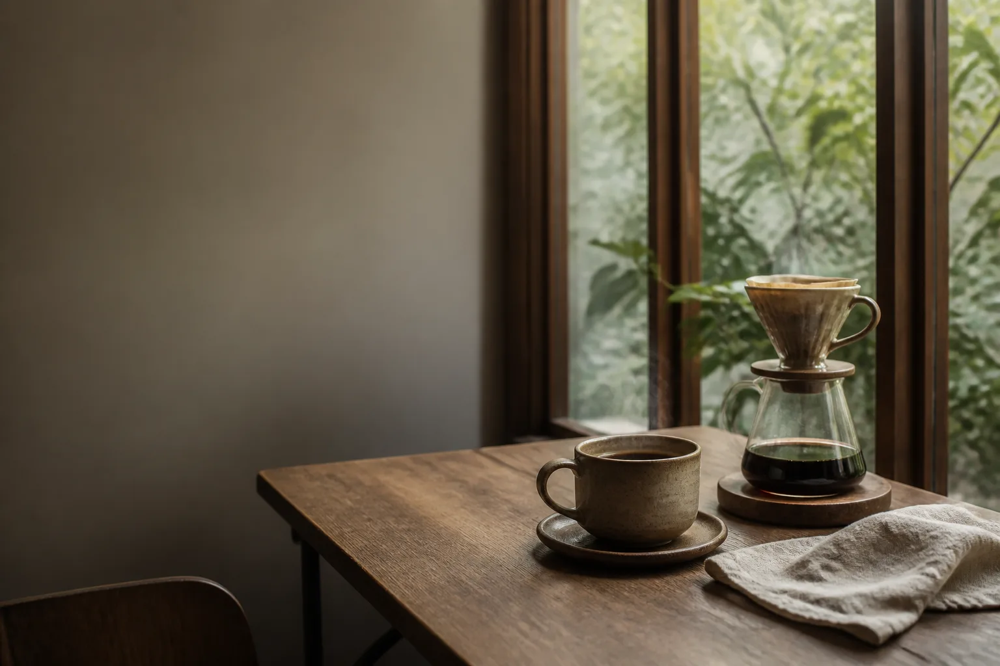

LIGHT ROAST · 手沖
窗光
明亮花香、柑橘與淡淡蜂蜜尾韻，適合慢慢展開的一天。

SCROLLOUR STORY
木窗咖啡相信，好咖啡不必複雜。從豆子的產地、烘焙到沖煮，我們選擇誠實而細緻的方式，讓風土自然說話。
木頭的溫度、窗邊的光，和一杯剛剛好的咖啡——這裡是城市裡，留給自己的一小段空白。
OUR COFFEE
依照季節挑選咖啡豆，保留每支豆子清楚、舒服的個性。
LIGHT ROAST · 手沖
明亮花香、柑橘與淡淡蜂蜜尾韻，適合慢慢展開的一天。
MEDIUM ROAST · 黑咖啡
焦糖、堅果與可可的平衡口感，是每天都喝不膩的溫柔。
HOUSE BLEND · 牛奶咖啡
厚實甜感遇上滑順鮮奶，像午後落在木桌上的一片暖光。
※ 實際品項依當日豆單與現場供應為準。
OUR CRAFT
不是追求炫技，而是理解每一支豆子的狀態。水溫、研磨與時間，都為了讓你喝到它最舒服的樣子。
依季節選擇來源透明、風味乾淨的咖啡豆。
反覆杯測，找到適合每支豆子的沖煮參數。
用好懂的方式，陪你找到真正喜歡的味道。
VISIT US
店址與營業資訊籌備中。留下 Email，我們會在正式開窗時通知你。